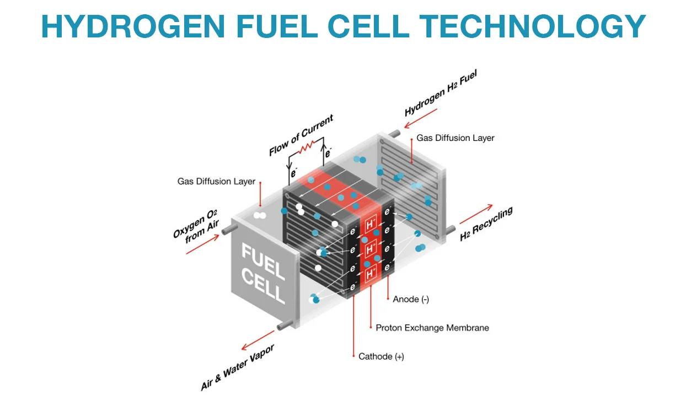
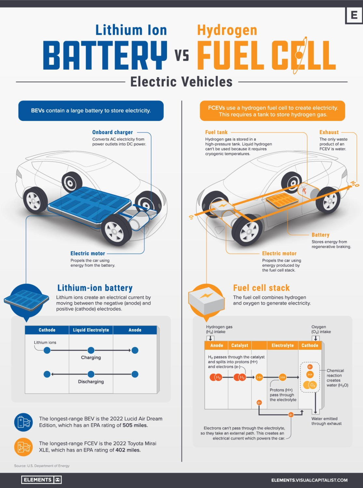
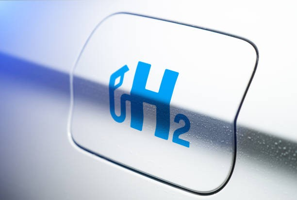
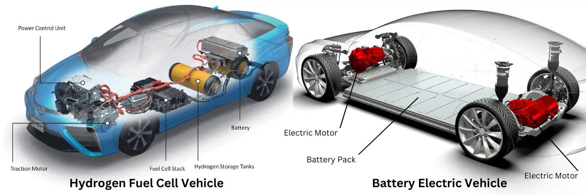
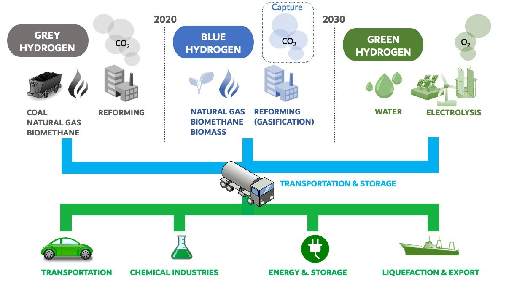
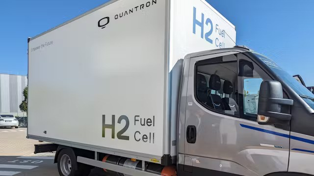

Introduction
As the world shifts towards cleaner transportation, electric vehicles (EVs) have become the poster child for eco-friendly mobility. But as we embrace the transition from gas-guzzling cars to electric alternatives, it’s clear that batteries aren’t the only path forward. Hydrogen fuel cells present an exciting and innovative alternative to traditional battery-electric vehicles (BEVs). Could hydrogen fuel cells be the key to accelerating our journey towards zero emissions? Let's dive into the world of hydrogen fuel cells and explore their potential to revolutionize the EV landscape.
What Are Hydrogen Fuel Cells?
At their core, hydrogen fuel cells generate electricity through a chemical reaction between hydrogen and oxygen. The process is clean, with the only by-product being water vapor. Unlike traditional combustion engines that burn fuel, fuel cells work through an electrochemical process. The basic components include:
- Hydrogen: The fuel source.
- Anode and Cathode: Electrodes where the reactions occur.
- Proton Exchange Membrane (PEM): Allows protons to pass while blocking electrons, forcing them through an external circuit, and creating electricity.
In a hydrogen fuel cell, the fuel (hydrogen) is fed into the anode, where it’s split into protons and electrons. The protons pass through the membrane while the electrons are forced around it, generating an electric current used to power the vehicle.

The Difference Between Hydrogen Fuel Cells and Battery Electric Vehicles (BEVs)
While both hydrogen fuel cell vehicles (FCVs) and battery electric vehicles (BEVs) are emission-free at the tailpipe, their technology and infrastructure needs are quite different. BEVs store electricity in lithium-ion batteries, while FCVs generate electricity on the go using hydrogen.
- Refueling vs. Recharging: Hydrogen fuel cells offer refueling times similar to gasoline vehicles, typically under 5 minutes, while BEVs often require longer charging periods.
- Range: FCVs typically offer greater driving ranges than most BEVs, making them more suitable for long-distance driving.
- Weight and Space: Hydrogen fuel tanks are lighter than large battery packs, offering weight and space advantages, especially for larger vehicles.

The Science Behind Hydrogen Fuel Cells
The fundamental science behind hydrogen fuel cells involves splitting hydrogen molecules and capturing the energy from this reaction. The hydrogen molecules (H2) are fed into the fuel cell’s anode, where they are split into protons and electrons. These protons pass through a membrane, while the electrons generate an electric current that powers the car. Once the electricity is generated, the protons and electrons recombine with oxygen (O2) from the air, forming water as the only by-product.
Why Hydrogen Fuel Cells for EVs?
The potential of hydrogen fuel cells in EVs lies in their efficiency and sustainability. Unlike fossil fuels, hydrogen can be produced in various ways, including through renewable resources. Hydrogen fuel cells also emit no harmful pollutants—just water vapor. This makes them a viable solution for cutting emissions in sectors where traditional batteries face limitations, such as heavy-duty transportation.

Key Advantages of Hydrogen Fuel Cells in Electric Vehicles
- Longer Driving Range: Hydrogen fuel cell vehicles often offer longer ranges compared to their battery-electric counterparts, making them an attractive option for long-distance travel.
- Faster Refueling: Refueling a hydrogen-powered vehicle can take just 3-5 minutes, significantly quicker than charging a battery-electric vehicle.
- Weight and Space Efficiency: Hydrogen fuel cells are lighter and more compact than heavy battery packs, allowing for more efficient vehicle design, particularly for larger vehicles.

Challenges Facing Hydrogen Fuel Cells in EVs
Despite their advantages, hydrogen fuel cells face significant challenges:
- Infrastructure: The lack of hydrogen refueling stations is a major barrier to widespread adoption.
- Cost: Hydrogen production, especially from renewable sources, is still expensive compared to conventional fuel or electricity.
- Storage and Transport: Hydrogen is a light and volatile gas, requiring high-pressure storage and sophisticated transport logistics.
Recent Technological Advances in Hydrogen Fuel Cells
Technological advancements are addressing many of these challenges. Improvements in fuel cell efficiency have made hydrogen vehicles more practical, while innovations in hydrogen production—such as electrolysis powered by renewable energy—are making "green" hydrogen more attainable. Advances in storage technology, including solid-state hydrogen storage, are also improving the safety and feasibility of hydrogen as a fuel.
Global Adoption of Hydrogen Fuel Cell Vehicles
Countries like Japan, South Korea, and Germany are leading the charge in hydrogen fuel cell development, with significant investments in infrastructure and technology. Major automakers like Toyota Motor Corporation , Hyundai Motor Company , and Honda are already producing hydrogen-powered vehicles, including the Toyota Mirai and Hyundai Nexo.
Hydrogen Production: The Green and Blue Debate

Hydrogen can be produced using various methods, each with different environmental impacts. The two most commonly discussed are:
- Green Hydrogen: Produced through electrolysis powered by renewable energy (wind, solar), making it the cleanest form.
- Blue Hydrogen: Generated from natural gas with carbon capture technology, making it cleaner than traditional hydrogen but still dependent on fossil fuels.
Hydrogen Fuel Cells and the Future of Heavy-Duty Vehicles
Heavy-duty sectors like trucking, buses, and shipping are prime candidates for hydrogen fuel cells. These vehicles need long-range capabilities and fast refueling, areas where battery-electric vehicles currently fall short. Hydrogen could also play a role in decarbonizing aviation and maritime industries, offering a cleaner alternative to jet fuel and diesel.

Government Policies and Support for Hydrogen Fuel Cells
Governments around the world are supporting hydrogen fuel cell development through incentives and research funding. The EU’s Hydrogen Strategy and the U.S. Department of Energy’s hydrogen initiatives are examples of how policy is driving the hydrogen economy forward.
The Future of Hydrogen Fuel Cells in Electric Vehicles
The future looks promising for hydrogen fuel cells as advancements continue and infrastructure improves. While battery-electric vehicles dominate the current market, hydrogen-powered EVs could play a critical role in sectors where batteries alone may not suffice, such as heavy transportation and long-distance travel.
Conclusion
Hydrogen fuel cells hold immense potential to complement battery-electric vehicles, offering advantages in range, refueling time, and versatility, particularly for larger vehicles. As technology improves and infrastructure develops, hydrogen could become a key player in the global effort to decarbonize transportation.